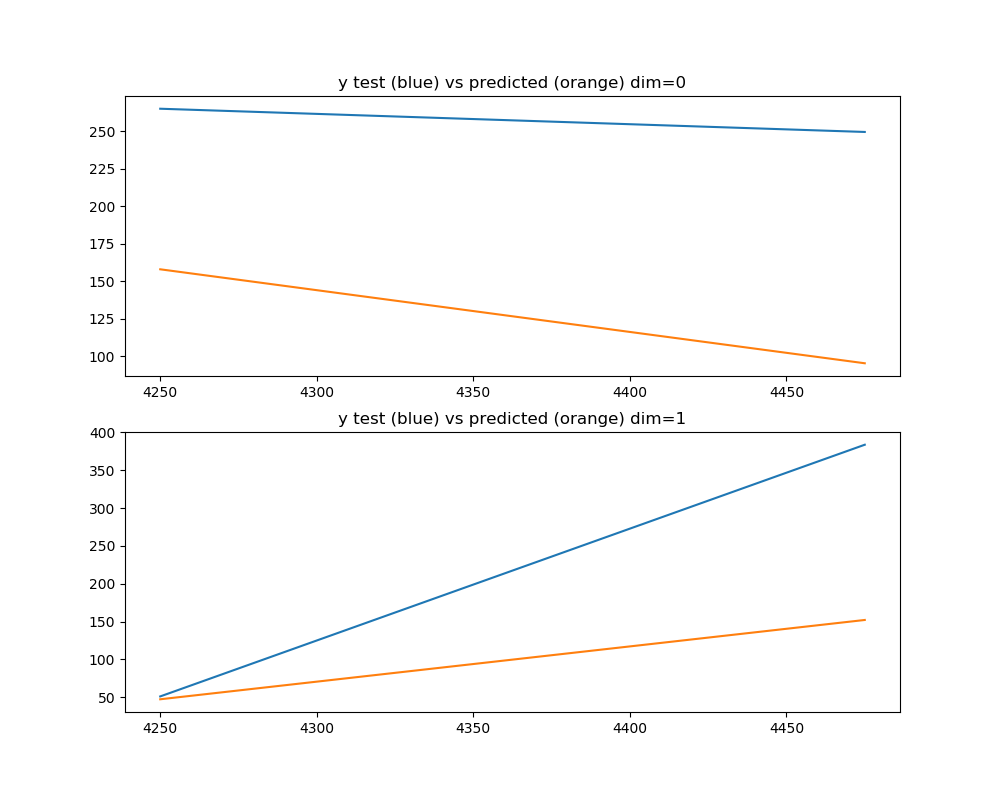

Note
Click here to download the full example code
Decoding position from firing rates where bins are different sizes and non-contiguous¶
Non-contiguous firing rate bins are constructed and decoded using support-gradient descent.
This is trivial demonstration of different bin sizes working in process_clustered_signal_data. Real uses should involve many more bins.
import numpy as np
from sklearn.preprocessing import StandardScaler
from sklearn.model_selection import train_test_split
from sklearn.linear_model import SGDRegressor
from sklearn.pipeline import make_pipeline
from sklearn.multioutput import MultiOutputRegressor
from mlneuro.multisignal import multi_to_single_signal
from mlneuro.preprocessing.signals import process_clustered_signal_data
from mlneuro.preprocessing.stimulus import stimulus_at_times
from mlneuro.utils.io import load_array_dict
from mlneuro.utils.visuals import n_subplot_grid
# Plot the maximum predicted value in each dimension
DISPLAY_PLOTS = True
# The time range to show in the plot (None for auto)
# default is a small range for example plots in documentation
PLOT_X_RANGE = None
# Load data
from mlneuro.datasets import load_restaurant_row
data = load_restaurant_row()
# A sloppy example of different length bins
# for calculating firing rates in
temporal_bin_edges = [
[3000, 3010],
[3050, 3100],
[4000, 4010],
[4040, 4050],
[4060, 4070],
[4200, 4300],
[4400, 4550]
]
temporal_bin_edges = np.array(temporal_bin_edges)
# Convert to a single signal
# Ensure unique cell ids
# Bin time, get firing rates
# Make sure there are no bins before and after since they are non-sequential
# Make sure that the firing rate is normalzied by bin size (default=True) to account for different length bins
T, X = process_clustered_signal_data(data['signal_times'], data['signal_cellids'],
temporal_bin_size=temporal_bin_edges,
bins_before=0,
bins_after=0,
normalize_by_bin_size=True)
# Get the stimulus value at the spike times
y = stimulus_at_times(data['full_stimulus_times'], data['full_stimulus'], T)
# Split the data, not shuffling so that the displayed plot will be over a small range
X_train, X_test, T_train, T_test, y_train, y_test = train_test_split(X, T, y, test_size=0.25, shuffle=False)
# Build a basic pipeline
# Notice, the SGDRegressor only supports single dimensional outputs so it is wrapped
# in a `MultiOutputRegressor` meta-class which fits an `SGDRegressor` per output dimension
pipeline = make_pipeline(StandardScaler(), MultiOutputRegressor(SGDRegressor()))
# Fit and predict on the pipeline
pipeline.fit(X_train, y_train)
y_predicted = pipeline.predict(X_test)
# Already single signal but this will sort the arrays quickly
T_test, (y_predicted, y_test) = multi_to_single_signal([T_test], [y_predicted], [y_test])
if DISPLAY_PLOTS:
fig, axes = n_subplot_grid(y_predicted.shape[1], max_horizontal=1, figsize=(10,8))
for dim, ax in enumerate(axes):
ax.plot(T_test, y_test[:, dim])
ax.plot(T_test, y_predicted[:, dim])
if PLOT_X_RANGE is not None: ax.set_xlim(PLOT_X_RANGE)
ax.set_title('y test (blue) vs predicted (orange) dim={}'.format(dim))
fig.show()
Total running time of the script: ( 0 minutes 2.097 seconds)